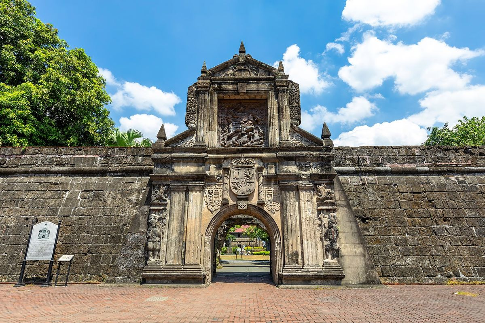
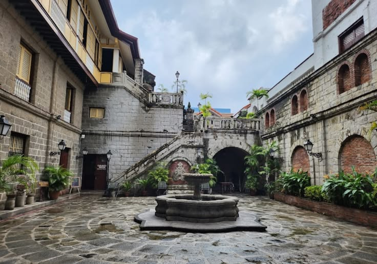

Popular Attractions Mga Sikat na Atraksyon

Fort Santiago
A citadel built by Spanish conquistadors in 1571. Isang kuta na itinayo ng mga mananakop na Espanyol noong 1571.
⭐ Historic Landmark Makasaysayang Landmark
San Agustin Church
A UNESCO World Heritage Site completed in 1607. Isang UNESCO World Heritage Site na natapos noong 1607.
🏛 UNESCO World Heritage Site
Manila Cathedral
The Mother Church of the Philippines. Ang Inang Simbahan ng Pilipinas.
⛪ Religious Landmark Relihiyosong Landmark
Casa Manila
A museum depicting colonial lifestyle. Isang museo na nagpapakita ng kolonyal na pamumuhay.
🏠 Cultural Museum Museong Kultural